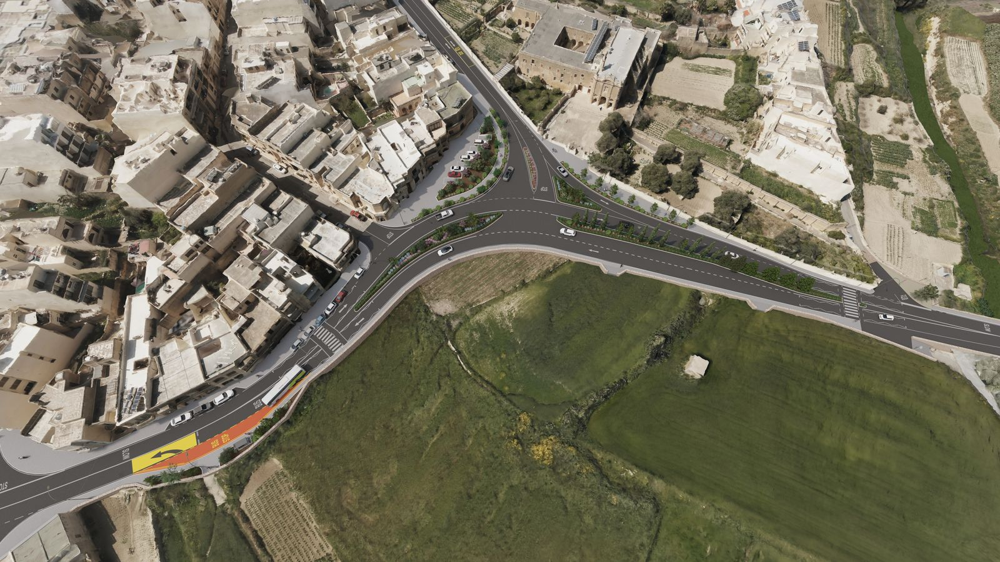

Architect
A warranted perit to lead projects from concept through delivery across restoration, residential and civic work — shaping design intent, coordinating consultants, and seeing schemes built to the highest standard.
Join a team that combines decades of experience with a forward-thinking spirit. At Perit Lewis, we foster careers through collaboration, innovation, and training, shaping Malta's environments while promoting professional growth within a culture of quality and ongoing enhancement.
A warranted perit to lead projects from concept through delivery across restoration, residential and civic work — shaping design intent, coordinating consultants, and seeing schemes built to the highest standard.

Design resilient structures and infrastructure. Strong analytical skills and a collaborative, detail-led approach are essential.

Support the studio with precise technical drawings, BIM models and construction documentation. A keen eye for detail and fluency in CAD / Revit will help bring our projects to life.
Manage project costs, contracts, and budgets across active sites, keeping money matters on track, compliant, and aligned with client expectations.
For future opportunities and practice updates.
Follow us on LinkedIn →